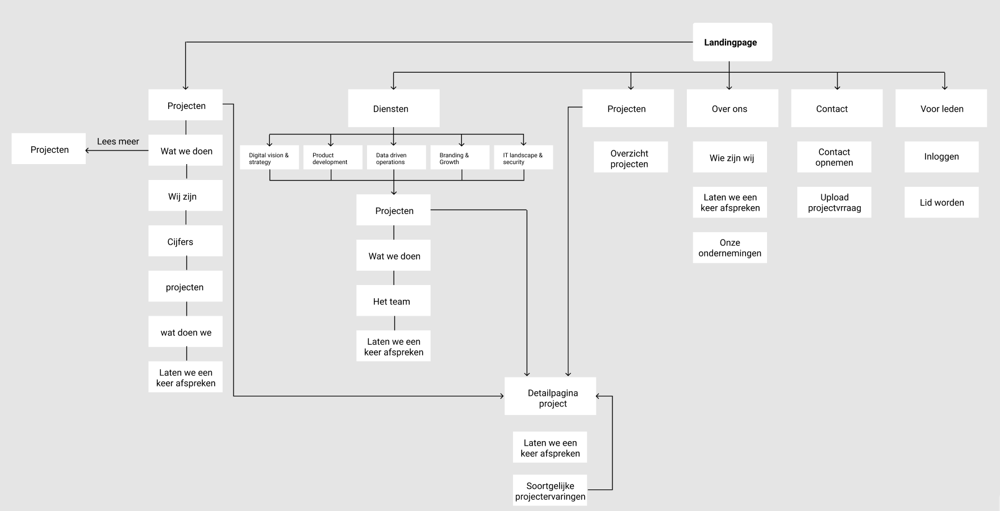

Home > Cases > Website Ucentri
Website Ucentri
De opdrachtgever is het start up bedrijf Ucentri in Amsterdam. Ucentri is een netwerk van digitale bedrijven dat MKB-bedrijven helpt bij het gericht inzetten van deze digitaal gespecialiseerde bedrijven. De klanten van Ucentri zijn de MKB-bedrijven die naar Ucentri toekomen voor hulp bij hun digitale transformatie voor bijvoorbeeld design, IT landschap of marktbekendheid. De leden van Ucentri zijn de gespecialiseerde bedrijven hierin en Ucentri koppelt daarom de juiste bedrijven aan de klant.
Ucentri wil graag een geheel nieuw ontwerp voor hun website hebben. Dit gedeelte word gezien door potentiele klanten dus er moet genoeg overtuiging in het nieuwe ontwerp zitten om die klanten over te halen om zich bij Ucentri te voegen.
Ze wilde verbetering in de structuur van de pagina's > marketing oogpunt > overtuigen om te bellen of contactformulier. Ook moest de flow van de pagina's visueel worden verbeterd > is de flow duidelijk?
Hoe ben ik te werk gegaan?
In de flowchart hieronder is goed te zien hoe groot en onduidelijk de website was. Zoals te zien is zijn er veel dubbele pagina’s en veel wegen naar deze verschillende pagina’s. Mijn doel is daarom ook om de website een stuk minimalistischer te maken zodat het voor de gebruiker overzichtelijk is om door de website te navigeren. Daarnaast bereiken de gebruikers sneller hun doel op een kleinere overzichtelijke website waar alle informatie op staat. Hier is een link naar de huidige website voor aanpassing:
Nadat ik het ontwerp had gemaakt en deze had gepresenteerd aan de opdrachtgever, gaven ze mij de optie om dit ontwerp ook te gaan developen voor hun. Deze kans heb ik natuurlijk gelijk gepakt omdat ik mij graag verder wilde ontwikkelen in Frontend development. Mijn opdracht was om van elke pagina een template te maken zodat zij deze konden gebruiken voor Django CMS. De backend van de website is gedaan door de developer van Ucentri, waar ik erg veel van heb geleerd. Hij heeft voor mij een klein stukje code geschreven met een beetje uitleg waar ik mee verder kon. Hiernaast in de afbeelding rechts zie je wat hij heeft gestuurd naar mij.